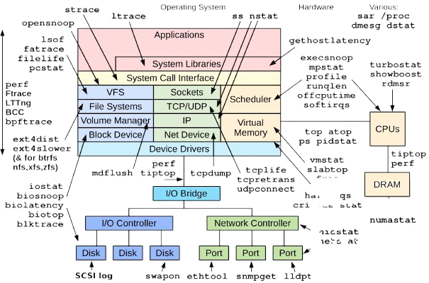
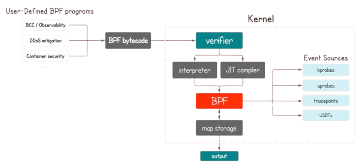
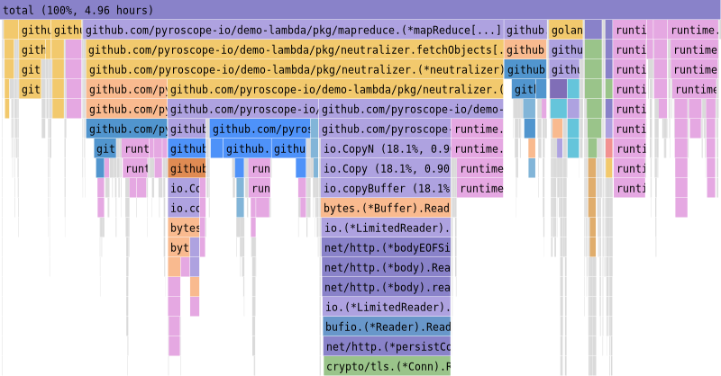
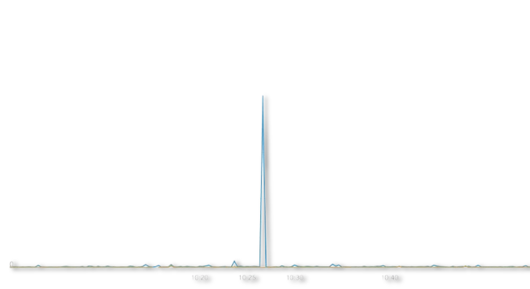

合作篇：打通操作系统可观测性最后一公里
即刻部署 HUATUO + 夜莺监控 工具组合，快速构建覆盖应用，中间件，数据库，操作系统内核的一体化可观测体系。HUATUO 开箱即用，从各维度全面观测内核，填补了操作系统可观测性领域的空白。
精细化、全维度、全景观测
自适应退避
资源损耗与观测精度动态平衡




即刻部署 HUATUO + 夜莺监控 工具组合，快速构建覆盖应用，中间件，数据库，操作系统内核的一体化可观测体系。HUATUO 开箱即用，从各维度全面观测内核，填补了操作系统可观测性领域的空白。
系统故障诊断面临多重挑战。如何在新技术范式与架构下，构建面向操作系统的低损耗、零侵扰、全景式、持续深度观测能力体系，成为亟待解决的核心问题。本系列文章分享 HUATUO 落地实践 …
8月2日，滴滴宣布其开源云原生操作系统可观测性项目 HUATUO 正式入驻中国计算机学会（CCF），加入其重点孵化项目序列。本次入驻不仅体现了滴滴长期践行开源共建共享的理念，也希望通过行业协作，共同推 …
(C) 2025 CCF 开源发展技术委员会、HUATUO 开源技术社区